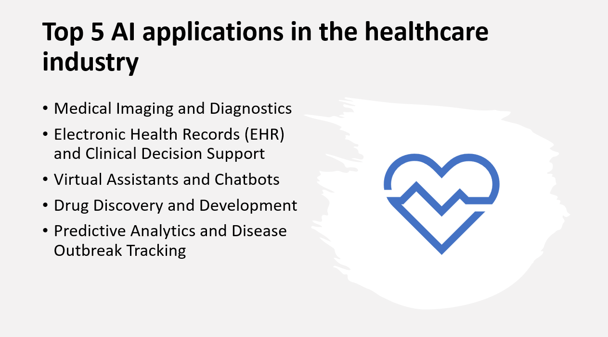

Introduction
Artificial Intelligence (AI) has significantly impacted the healthcare industry, revolutionizing the way medical professionals diagnose, treat, and manage patient care.
In this blog post, we will explore the top five AI applications that are transforming healthcare and improving patient outcomes.
Why use AI applications in the healthcare industry
- AI algorithms enhance accuracy and efficiency in medical diagnostics.
- AI-powered tools monitor patients, detect anomalies, and provide real-time alerts.
- AI enables personalized treatment plans based on individual patient characteristics.
- AI automates administrative tasks, streamlines workflows, and optimizes resource allocation.
- AI accelerates medical research, drug discovery, and clinical trials.
Here Are Our Top 5 AI applications in the healthcare industry:
1: Medical Imaging and Diagnostics
Overview and Importance
The importance of AI in medical imaging and diagnostics lies in its ability to augment the capabilities of healthcare providers. By leveraging advanced algorithms, AI can analyze medical images, identify patterns, detect abnormalities, and assist in making accurate diagnoses. This not only saves time and effort but also enhances the precision and reliability of diagnostic processes. AI has the potential to transform medical imaging from a qualitative discipline to a more quantitative and data-driven approach.
Key Applications
AI-Powered Image Recognition and Analysis
- AI algorithms analyze medical images to detect and classify abnormalities in various domains such as radiology, pathology, and dermatology, assisting in early detection and accurate diagnosis.
Automated Lesion Detection and Segmentation
- AI techniques enable automated detection and segmentation of lesions in medical imaging, aiding in locating and quantifying abnormalities for treatment planning and monitoring.
Benefits and Impact
- AI-driven medical imaging reduces interpretation time, enhances accuracy and diagnostic confidence, improves patient care and outcomes, enables personalized treatment, and optimizes resource utilization in healthcare systems.
2: Electronic Health Records (EHR) and Clinical Decision Support
Overview and Importance
The importance of EHR and CDS systems lies in their ability to improve the quality, safety, and efficiency of healthcare delivery. EHR systems enable easy and secure access to patient information across different healthcare settings, promoting continuity of care and facilitating information exchange among healthcare providers. CDS systems analyze patient data in real-time, providing clinicians with alerts, reminders, and clinical guidelines, which can help prevent medical errors, improve adherence to best practices, and enhance patient outcomes.
Key Applications
Streamlined Documentation and Data Management
- EHR systems digitize and centralize patient health information, improving accuracy and efficiency in healthcare operations.
Clinical Decision Support
- AI-powered CDS systems provide evidence-based guidance to healthcare professionals, enhancing decision-making and patient outcomes.
Population Health Management
- AI and EHR systems enable proactive interventions and optimized resource allocation for population health management.
3: Virtual Assistants and Chatbots
Overview and Importance
Virtual assistants and chatbots have emerged as valuable tools in the healthcare industry, revolutionizing patient care, improving access to information, and streamlining administrative processes. These AI-powered technologies offer a range of benefits, from enhancing patient engagement to optimizing healthcare operations. They enable healthcare providers to deliver personalized assistance, access medical knowledge, and automate routine tasks, ultimately improving patient outcomes and experiences.
Key Applications
Patient Support and Education
- Virtual assistants and chatbots offer on-demand healthcare information, guidance, and educational resources to empower and educate patients.
Appointment Scheduling and Reminders
- Virtual assistants and chatbots streamline appointment management, including scheduling, rescheduling, and sending automated reminders, improving scheduling efficiency.
Triage and Symptom Assessment
- Chatbots equipped with medical knowledge evaluate symptoms and provide preliminary assessments, assisting in patient triage and guiding them towards appropriate levels of care.
4: Drug Discovery and Development
Overview and Importance
The importance of AI in drug discovery and development lies in its potential to expedite the identification of promising drug candidates, reduce costs, and improve success rates. By leveraging AI algorithms and computational models, researchers can analyze large datasets, identify patterns, and make data-driven decisions, ultimately leading to the development of safer and more effective drugs.
Key Applications
Target Identification and Validation
- AI analyzes biological data to identify potential drug targets, aiding in the selection of promising targets for further investigation.
Drug Design and Optimization
- AI predicts properties of drug candidates and optimizes their chemical structures to enhance efficacy and reduce side effects.
Clinical Trial Optimization
- AI optimizes the design and recruitment process for clinical trials, improving patient selection and reducing time and cost.
5: Predictive Analytics and Disease Outbreak Tracking
Overview and Importance
Predictive analytics and disease outbreak tracking using AI are crucial in public health and healthcare management. By analyzing large datasets, AI can predict disease occurrences and inform timely interventions. These technologies have the potential to save lives and improve public health responses by providing valuable insights for resource allocation and mitigation strategies.
Key Applications
Early Disease Detection
- AI analyzes various data sources to detect early signs of disease outbreaks, enabling proactive measures and preventing the spread of diseases.
Epidemic Forecasting
- AI models forecast the trajectory and magnitude of disease outbreaks, helping healthcare systems and policymakers prepare for potential surges in demand for resources.
Real-time Surveillance
- AI algorithms analyze real-time data streams to monitor disease-related signals and detect potential outbreaks, enabling rapid response and targeted interventions.
Conclusion
AI has made significant advancements in the healthcare industry, transforming various areas of healthcare delivery. The top five AI applications in healthcare include:
Medical Imaging and Diagnostics: AI-powered image recognition and analysis have improved accuracy and efficiency in diagnosing diseases, leading to early detection and improved treatment planning.
Electronic Health Records (EHR) and Clinical Decision Support: AI-driven EHR systems and clinical decision support tools help healthcare professionals in making informed decisions, improving patient care, and reducing medical errors.
Virtual Assistants and Chatbots: AI-powered virtual assistants and chatbots enhance patient engagement, provide personalized healthcare information, and streamline administrative processes, improving overall patient experiences.
Drug Discovery and Development: AI accelerates the drug discovery and development process by analyzing vast amounts of data, enabling the identification of potential drug candidates and speeding up the research and testing phases.
Predictive Analytics and Disease Outbreak Tracking: AI-driven predictive analytics aids in early disease detection, epidemic forecasting, real-time surveillance, and resource allocation, empowering public health officials to respond effectively to disease outbreaks.
The transformative impact of AI in healthcare is evident. AI improves patient outcomes through early diagnosis, personalized treatment, and enhanced decision-making. It enhances efficiency by automating tasks, reducing errors, and optimizing resource allocation. AI also advances healthcare through innovations in drug discovery, precision medicine, and disease management.
Ongoing research and collaboration are necessary for the responsible adoption of AI in healthcare. Addressing ethical considerations, privacy concerns, and regulatory frameworks is crucial for secure implementation. With advancements, AI can revolutionize healthcare, enhancing patient outcomes, reducing costs, and enabling personalized care.